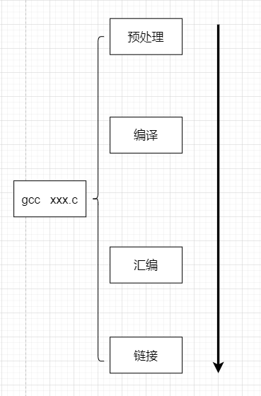

成熟的IDE在构建时隐藏了复杂的实现,这里就绕过IDE去了解真正的编译流程是什么?

上图展示了使用gcc命令时会经历的四个过程,下面来逐一介绍一下
| 流程 | 解析 |
| 预编译 | 相关的头文件、源文件都被cpp(预编译器)预编译成.i文件 |
| 编译 | 将与处理完的文件进行一系列词法分析、语法分析、语义分析及优化后生成相应的汇编代码文件 .i->.s |
| 汇编 | 将汇编代码转变成机器可以执行的指令,每一个汇编语句几乎都对应一条机器指令 .s->.o |
| 链接 | 将由编译器或汇编器生成的一个或多个目标文件,通过链接器组合成一个可执行文件或库文件 |
gcc、g++这些命令只是后台程序的包装,它们会根据不同的参数要求去调用预编译程序(cc1、cc1plus),汇编器(as),链接器(ld)